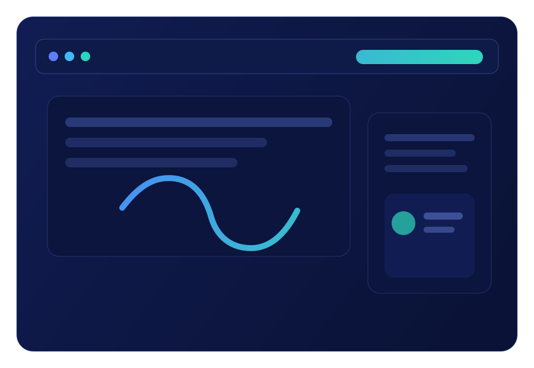
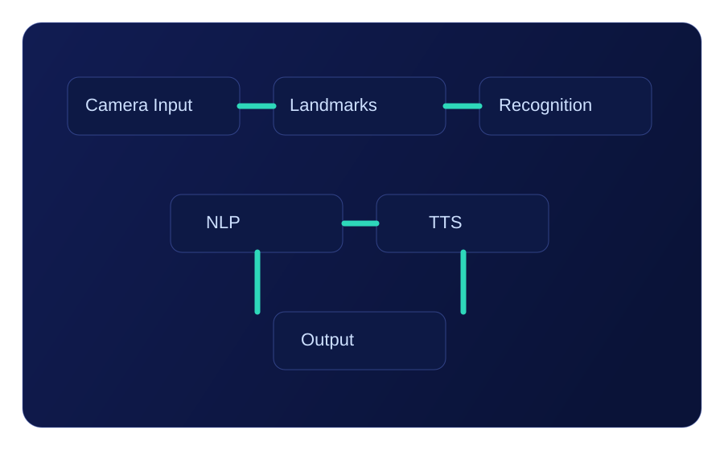
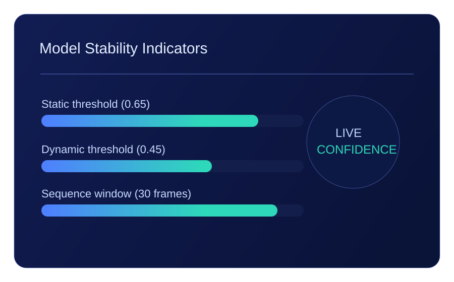
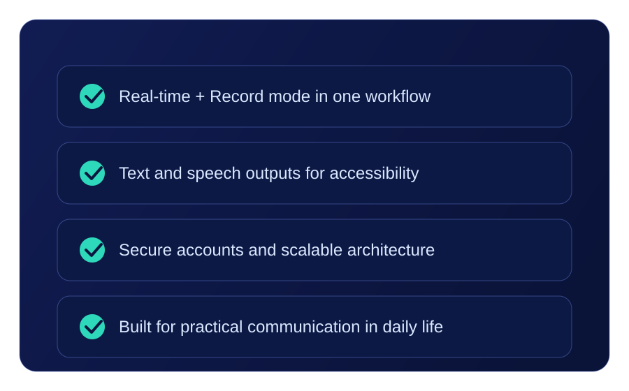
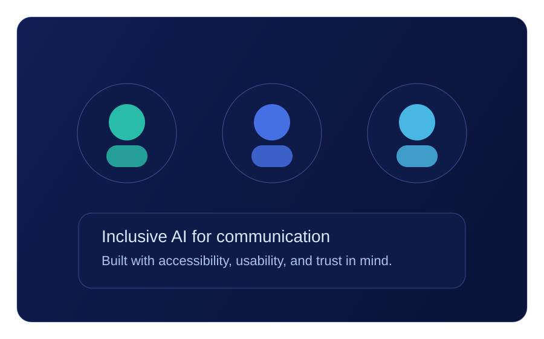

AI-Powered Sign Language Translator
Start translating now
Bridge communication gaps instantly with real-time sign recognition, text translation, and speech output in one accessible platform.

About the application
Gestura captures hand and face landmarks from camera input, classifies signs with static and dynamic models, and produces readable text plus audio.
It is designed for live communication support with a practical interface, low-latency frame processing, and clear feedback for users.

Accuracy of the model
The current MVP uses confidence thresholds and sequence-based prediction to improve stability in real-time usage.
- Static inference confidence threshold: 0.65
- Dynamic inference confidence threshold: 0.45
- Dynamic prediction sequence window: 30 frames

Why choose Gestura
- Live and recorded translation flows in one product.
- Accessible output: text + speech for practical communication.
- Secure authenticated usage with account controls.
- Scalable architecture for future vocabulary expansion.

About us
We are building Gestura with a focus on inclusive communication, practical AI deployment, and a user experience that works for everyday needs.
Our goal is to make sign language translation approachable, reliable, and continuously improvable as the model grows.
